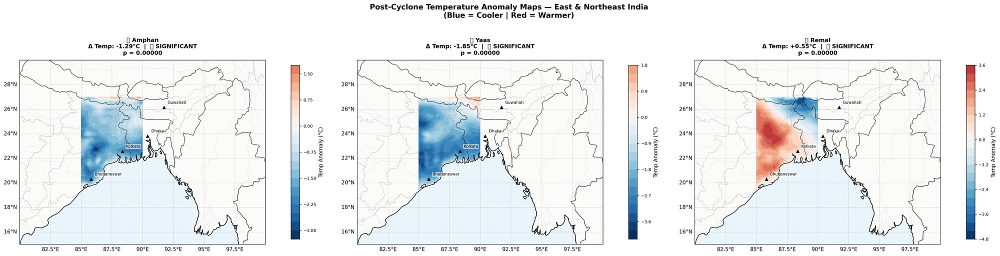
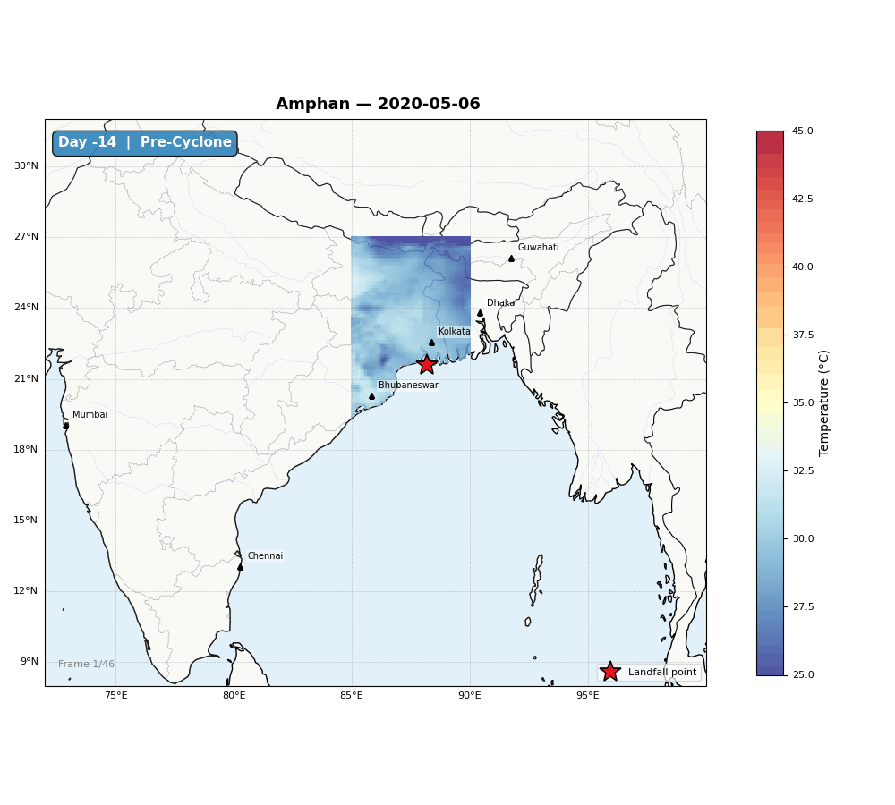
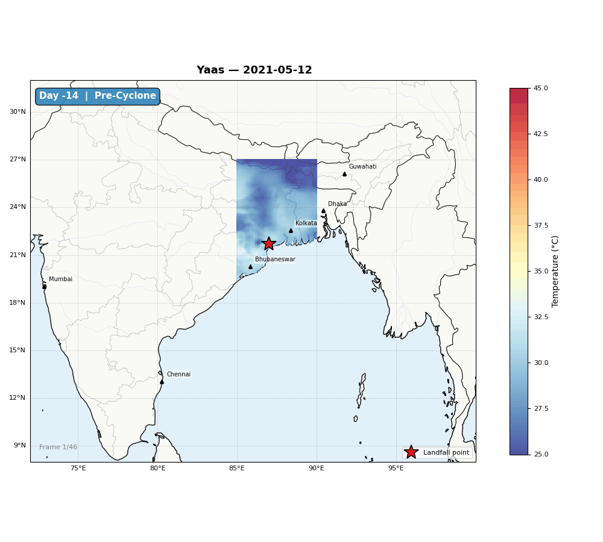
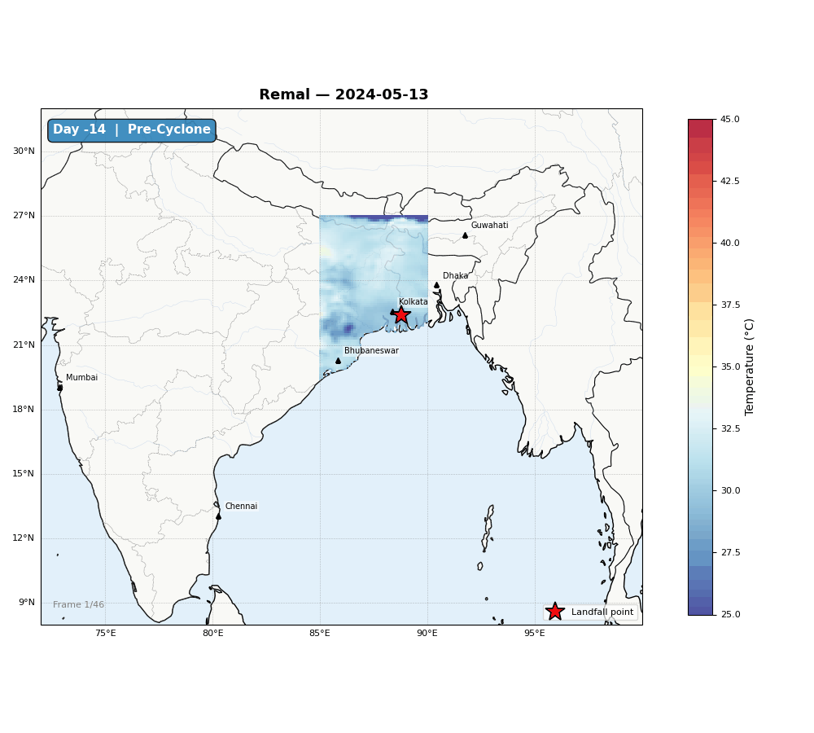

This coast, where West Bengal, Odisha and Bangladesh meet, is one of the most cyclone-exposed places on Earth. After a storm clears, does the heat spike back up? We checked the ERA5-Land temperature record for three recent cyclones, Amphan, Yaas and Remal, to find out.
Amphan made landfall 20 May 2020, Yaas 26 May 2021, Remal 27 May 2024, all on the same coastal stretch of West Bengal and Odisha. Scroll down for the full analysis, the animations, and an honest verdict on the hypothesis.
The setup
What we were looking at
All three made landfall on the same short stretch of coast, which is what makes them comparable.
Super Cyclonic Storm
Amphan
Landfall 20 May 2020 · Odisha–West Bengal coast
The strongest of the three by far. Reported at roughly 128 deaths and about $13 billion in damage across India, the costliest cyclone on record for the North Indian Ocean at the time.
Landfall point
21.6°N, 88.2°E
Pre-cyclone window
06–19 May 2020
Very Severe Cyclonic Storm
Yaas
Landfall 26 May 2021 · Odisha coast
Made landfall a year after Amphan, further south on the Odisha coast. Its main impact was widespread coastal and inland flooding rather than wind damage.
Landfall point
21.7°N, 87.0°E
Pre-cyclone window
12–25 May 2021
Severe Cyclonic Storm
Remal
Landfall 27 May 2024 · West Bengal coast
The most recent and comparatively weaker system, but its rain band reached furthest, with heavy rainfall extending into Northeast India as far as Assam.
Landfall point
22.4°N, 88.8°E
Pre-cyclone window
13–26 May 2024
Four steps, run on ERA5-Land 2m air temperature for the box 17°N–27°N, 85°E–90°E.
01
Pick a before and after
The 14 days right before landfall as the "pre" window, and the 32 days right after as the "post" window.
02
Compare the two
Every grid cell, every day, in both windows pooled and run through an independent two-sample t-test.
03
Size the shift
Cohen's d turns the raw temperature change into an effect size, separating a big shift from a small, precise one.
04
Flag the extremes
A day counts as a heatwave day if the region's hottest spot beat the top 5% of pre-cyclone temperatures.
Loaded live from the results CSV
The full analysis
Each cyclone's before and after
Nothing here is rounded for effect, these are the analysis's own numbers.
Loading results…
Open the full results table
Post-cyclone heatwave analysis results, per cyclone
Cyclone
Pre-cyclone period
Pre temp (°C)
Post temp (°C)
Change (°C)
p-value
Cohen's d
Heatwave days
Heatwave %
Significant
The same numbers, three ways
Temperature change per cyclone. Red bars warmed, blue bars cooled.
Each panel is post-cyclone average temperature minus pre-cyclone average temperature, cell by cell.

Blue = cooler after landfall Red = warmer after landfall
Amphan and Yaas both show a broad cooling footprint across West Bengal and Odisha. Remal is the outlier, warming concentrated to the west of its landfall point rather than cooling.
Watching each cyclone pass through
Each animation steps through the full pre- to post-cyclone window, one frame per day, landfall marked on the map.
Amphan
20 May 2020

Animation file not found at visualizations/animations/Amphan_animation.gif. Add it from the repository to display it here.'">
Landfall 21.6°N, 88.2°E · pre-cyclone through post-cyclone window
Yaas
26 May 2021

Animation file not found at visualizations/animations/Yaas_animation.gif. Add it from the repository to display it here.'">
Landfall 21.7°N, 87.0°E · pre-cyclone through post-cyclone window
Remal
27 May 2024

Animation file not found at visualizations/animations/Remal_animation.gif. Add it from the repository to display it here.'">
Landfall 22.4°N, 88.8°E · pre-cyclone through post-cyclone window
After the numbers
Where this lands
So, does the heat come back?
Mostly no. Two of the three cyclones cooled the region down, not up.
Amphan
−1.29°C
Cooled, significant
Yaas
−1.85°C
Cooled, significant
Remal
+0.55°C
Warmed, significant
Why it cooled
Amphan and Yaas both dropped the region's average temperature by more than a degree. The likely cause is the storm itself: heavy cloud cover, intense rainfall and evaporative cooling that lingers for days after landfall.
Why the hypothesis fails
Two of three cyclones moved in the opposite direction from what was expected. That is enough to reject a general post-cyclone warming pattern here. Remal's warming is real and statistically solid, but it is the exception, not the rule.
The heatwave paradox
Even the two cooling cyclones still saw heatwave-day shares far above the 5% baseline: 40.6% for Amphan, 15.6% for Yaas. Average cooling and sharp local spikes can happen at the same time, and that overlap deserves a closer look.
What we'd chase next
Three cyclones is a start, not a finished picture. Here is what would sharpen it.
01
More cyclones
Three events is a start, not a sample. A pattern this mixed needs more landfalls, across more seasons, before it settles into anything close to a rule.
02
Add humidity and rainfall
Temperature alone cannot explain why Amphan and Yaas cooled while Remal warmed. Precipitation and humidity data would help separate cloud-driven cooling from whatever pushed Remal the other way.
03
Chase the local spikes
The elevated heatwave-day percentage inside an overall cooling trend is the most interesting loose thread here, and it deserves its own finer-grained look.
Built for IEEE GRSS SPARK 2.0
🏆 Winner · Team Nakshamitra
This analysis was built for IEEE GRSS SPARK 2.0, under Problem Statement 4: Post-Cyclone Heatwave Analysis. Team Nakshamitra's submission, this study of Amphan, Yaas and Remal using ERA5-Land reanalysis data, won the competition.
Acknowledgment. This project was built together with Barnali Bhowmik, a classmate from the MSc Geoinformatics program. From the data pull through the final analysis, this was teamwork, and the win belongs to both of us. Thank you, Barnali, for the hours and the collaboration that got us here.
Data, tools and links
ERA5-Land hourly reanalysis, Copernicus Climate Data Store, 2m temperature, the core dataset behind every number on this page
Analysis built in Python (h5py, NumPy, SciPy, Matplotlib, Cartopy) on Google Colab
Study area boundary: 17°N–27°N, 85°E–90°E
Full repository, including the notebook, raw results CSV and figures